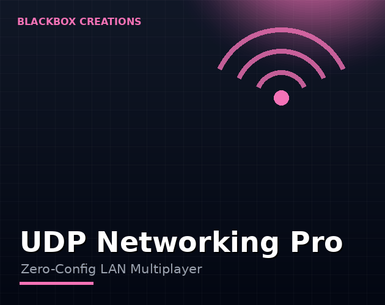

Tools / UDP Networking Pro
Local multiplayer without the server headache. Devices find each other automatically on the LAN, then talk over fast UDP messaging — on VR headsets, PC and mobile.
Instant download & priority support
One-time purchase · Instant download · Free minor updates
Buy nowAlso on the Unity Asset Store

Not every multiplayer game needs the cloud. Same-room VR experiences, classroom apps, exhibitions, arcade setups and party games all run best on the local network — lower latency, no accounts, no server bills. UDP Networking Pro makes that trivial.
Developers building local-multiplayer Unity games: VR arcades, co-located VR, mobile party games, interactive installations and prototypes that need devices talking to each other fast.
The most annoying part of local multiplayer is the part before the game starts: typing IP addresses, configuring ports, wondering why two devices cannot see each other. UDP Networking Pro removes it. Devices on the same local network discover each other automatically — no manual addressing, no configuration screens, no "what's your IP?" shouted across the room. For VR arcades, classrooms, and exhibitions, where the person setting up is not a network engineer, that alone is worth the price.
Once discovered, devices talk directly to each other over UDP: fast, lightweight datagrams with none of the handshake overhead of heavier protocols. You get LAN messaging primitives you can build on — position updates, game events, state changes — without standing up any server infrastructure at all. No hosting, no accounts, no monthly bill, no backend to maintain.
For same-room play, the local network wins on every axis that matters. Latency is measured in single-digit milliseconds instead of tens or hundreds. There is no dependency on internet quality — the venue's shaky uplink does not matter when traffic never leaves the room. And the operations story is simple: no servers to provision, no player accounts to manage, no service that can go down on launch day.
Honest framing: this is a networking transport, not a finished multiplayer game. It handles discovery and messaging; your game logic — what to send, when to send it, how to resolve conflicts — is still yours to design. That is the right split: the fiddly, error-prone part (finding devices, moving bytes) is solved, and the creative part (your game's netcode design) stays in your hands.
Local multiplayer is unusually pleasant to test, because everything happens on hardware you can see. The standard setup: run one instance in the Unity Editor and a second on a device (or a second Editor instance) on the same network, and watch discovery connect them with no configuration. That tight loop — change code, test with two players in seconds — is a genuine development advantage over cloud multiplayer, where every test needs deployed infrastructure. Bugs in LAN play are also easier to reproduce: same room, same network, same result.
Most Unity multiplayer solutions need servers, accounts, or cloud services. UDP Networking Pro takes the other path: direct UDP messaging between devices on a local network, with automatic device discovery — players just appear. It is the straightforward answer to how to make LAN multiplayer in Unity for VR arcades, classrooms, exhibitions, and party games, on Quest, PC, and mobile.
No. Discovery and messaging happen directly between devices on the local network.
Yes — it's built for VR/PC/mobile Unity builds, including Quest headsets on the same network.
No — this is a LAN tool. Discovery and messaging happen between devices on the same local network, which is exactly what gives it the low latency and zero-infrastructure story. For internet play you need a relay or server architecture instead.
Local-multiplayer Unity games: VR arcades and co-located VR, mobile party games, classroom apps, interactive installations, exhibitions — anywhere the players are in the same room or building.
Yes — it is built for VR, PC and mobile Unity builds, including Quest headsets on the same network as the other devices.
LAN traffic stays inside the local network — it never touches the internet, which removes whole categories of exposure. For sensitive contexts like classrooms, treat the local network itself as the trust boundary: anyone on the same network can in principle observe unencrypted UDP traffic, so keep play sessions on networks you control.
Add the UDP Networking Pro prefab, and devices on the same network discover each other automatically — no server, no IP addresses to type, no accounts. Send messages between players with a simple send/receive API.
No. That is the point: devices talk directly to each other over the local network. There is nothing to host, nothing to pay for monthly, and it works fully offline on a local router.
Unity Netcode (and Photon, Mirror) target internet multiplayer with lobbies and relay servers. UDP Networking Pro targets the local network: same-room VR, arcade cabinets, classrooms. If your players share a Wi-Fi network, direct UDP is simpler, faster to set up, and free to run.
Yes — Quest, PC, and mobile are all supported. Same-room Quest multiplayer over local Wi-Fi is one of its most popular use cases.